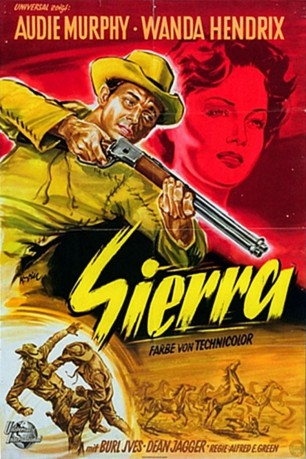

IMDB-Wertung: 6.7 / 10
IMDB-Wertung: 6.7 / 10  Metascore:
Metascore: 
Ring Hassard und Vater Jeff, leben in einem versteckten Bergnest, weil Jeff wird für einen Mord gesucht wird, den er nicht begangen hat...
 IMDB-Wertung: 6.7 / 10 Metascore:
Ring Hassard und Vater Jeff, leben in einem versteckten Bergnest, weil Jeff wird für einen Mord gesucht wird, den er nicht begangen hat...
Jahr: 1950
Dauer: 82 Minuten
FSK: 12
Land: USA Studio: Universal PicturesTonspuren:
Untertitel:
Auflösung: 1080p (1472x1080) Größe: 5027 MB
Genre: Western
Regisseur: Alfred E. Green
Drehbuch: Taylor Hackford
Soundtrack:
Darsteller:
 Audie Murphy als Ring Hassard
Audie Murphy als Ring Hassard Burl Ives als Lonesome
Burl Ives als Lonesome Dean Jagger als Jeff Hassard
Dean Jagger als Jeff Hassard Tony Curtis als Brent Coulter
Tony Curtis als Brent Coulter Elliott Reid als Duke Lafferty
Elliott Reid als Duke Lafferty Roy Roberts als Sheriff Knudsen
Roy Roberts als Sheriff Knudsen John Doucette als Jed Coulter
John Doucette als Jed Coulter I. Stanford Jolley als Snake Willens
I. Stanford Jolley als Snake Willens Jack Ingram als Al
Jack Ingram als Al Kansas Moehring als Trial Spectator , uncredited
Kansas Moehring als Trial Spectator , uncredited Charles Morton als Trial Spectator , uncredited
Charles Morton als Trial Spectator , uncreditedDatei: X:\HD-Western-1900-1959\Sierra (1950, FSK12, 1472x1080).mkv seit 09.05.2016
Festplatte: HD Eastern+Western
 Es gibt insgesamt 98 Filme in der Gruppe 'HD-Western-1900-1959'
Es gibt insgesamt 98 Filme in der Gruppe 'HD-Western-1900-1959'